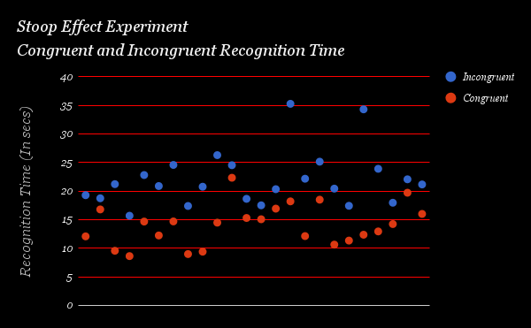

In a Stroop task, participants are presented with a list of words, with each word displayed in a color of ink. The participant’s task is to say out loud the color of the ink in which the word is printed. The task has two conditions: a congruent words condition, and an incongruent words condition. In the congruent words condition, the words being displayed are color words whose names match the colors in which they are printed: for example RED, BLUE. In the incongruent words condition, the words displayed are color words whose names do not match the colors in which they are printed: for example PURPLE, ORANGE. In each case, we measure the time it takes to name the ink colors in equally-sized lists. Each participant will go through and record a time from each condition.
1. What is our independent variable? What is our dependent variable?
Independent Variable here, are the words conditions specified, namely :-
1. Congruent Words
2. Incongruent Words
Dependent Variable here, is the time it takes to speak out the respective ink colors in lists of words(All are of equal size)
2. What is an appropriate set of hypotheses for this task? What kind of statistical test do you expect to perform? Justify your choices.
In this experiment, the null hypothesis is considered that the mean time for color recognition for congruent words is equal to or greater than the mean time for incongruent words, and hence as a result we need to effectuate the one-tailed test for the experiment. The alternative hypothesis contradicting to the null hypothesis should be that the mean of congruent words is less than the mean of incongruent words.
H0: μC ≥ μI
HA: μC < μI
where μ is a population mean, "C" represents the congruent words condition while the subscript "I" represents the incongruent words condition.
One-tailed, dependent samples t-test comparing the difference in means of the time to name the ink colors for congruent words and incongruent words should be performed. By performing this test, we aim to understand and determine whether enough evidence is provided in the data sample provided, to prove and conclude that the congruent words mean color recognition time is less than the incongruent words mean color recognition time for the entire population but not just referring to the given sample of the data.
As we have observed during the statistical evaluation of the experiment, it is seen that the sample size is less than 30 and the population variance is unknown as well. Hence, a t-test is the most appropriately suitable for this experiment. The sample data is no longer assumed to be a normal distribution, since the sample size is less than 30, the use of Z-value distribution is inapt. T-test? The following assumptions are required for t-tests for dependent means:Assumptions of T-test?
One-tailed test is apt here under the hypothetical and logical assumption that incongruent word conditions will not improve recognition times. The one-tailed test provides us with better method to thoroughly analyze the negative impact of incongruent word conditions on recognition times.
The t-test must be of the dependent samples variety because the same subject is subjected to two conditions and tested for each, which are the defining criteria for "within-subjects" or "repeated-measures" statistical tests.Dependent t-test?
Now it’s your chance to try out the Stroop task for yourself. Go to this link, which has a Java-based applet for performing the Stroop task. Record the times that you received on the task (you do not need to submit your times to the site.) Now, download this dataset which contains results from a number of participants in the task. Each row of the dataset contains the performance for one participant, with the first number their results on the congruent task and the second number their performance on the incongruent task.
3. Report some descriptive statistics regarding this dataset. Include at least one measure of central tendency and at least one measure of variability.
| Statistic | Congruent | Incongruent | Difference (C-I) |
| n | 24 | 24 | 24 |
| x̄ | 14.05 | 22.02 | -7.96 |
| Median | 14.36 | 21.02 | -7.67 |
| s2 | 12.67 | 23.01 | 23.67 |
| s | 3.56 | 4.80 | 4.86 |
| SE | 0.73 | 0.98 | 0.99 |
4. Provide one or two visualizations that show the distribution of the sample data. Write one or two sentences noting what you observe about the plot or plots.

The bucket range of the congruent words condition data is 8 second to 23 seconds. The bucket range of the incongruent words condition data is 14 second to 36 seconds, i.e. noticeably to the right of the congruent words condition data.
5. Now, perform the statistical test and report your results. What is your confidence level and your critical statistic value? Do you reject the null hypothesis or fail to reject it? Come to a conclusion in terms of the experiment task. Did the results match up with your expectations?
α = .01
df = 23
tcrit = -2.50
t = -8.02
p-value = < .0001
At the 99% confidence level (α = .01) and 23 degrees of freedom, the critical statistic value for a one-tailed test in the negative direction is -2.5. The calculated t-statistic for the difference in colour recognition time means of the congruent and incongruent word data is -8.02. Since the t-statistic is in the critical region, the null hypothesis is rejected. With the data presented, it is very unlikely that the 7.96 second difference in mean time for colour recognition for the congruent data vs. the incongruent data is obtained if the two means are actually the same (or if μC > μI). By conventional criteria, this difference is considered to be extremely statistically significant.
There is sufficient evidence at the α = .01 level of significance to support the claim that it takes less time to recognize the colour of words with the congruent condition compared to words with the incongruent condition.
6. Optional: What do you think is responsible for the effects observed? Can you think of an alternative or similar task that would result in a similar effect? Some research about the problem will be helpful for thinking about these two questions!
According to my analysis, the brain commands and tends to focus on reading the words, rather than interpret the color of the word. Usually to recognize the color, one has to stress himself and overcome this default activity performed by the brain which usually takes the time and hence a time delay occurs which causes the incongruent words to be read with more amount of time. Certain situations occur when the word is not interpreted properly and this requires the person to re-read the word and which in turn further increases the time
As a result, we conclude that, in general, it takes less time to recognize the congruent words and more time to recognize the incongruent words. The potential reason for this is that the brain lays more focus on reading the word, rather than interpreting its color.